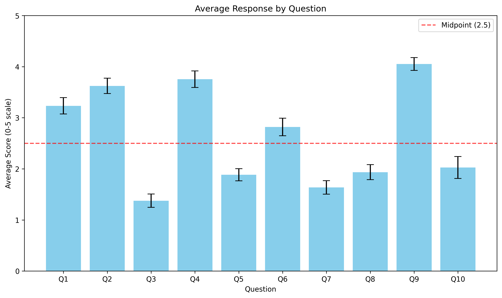
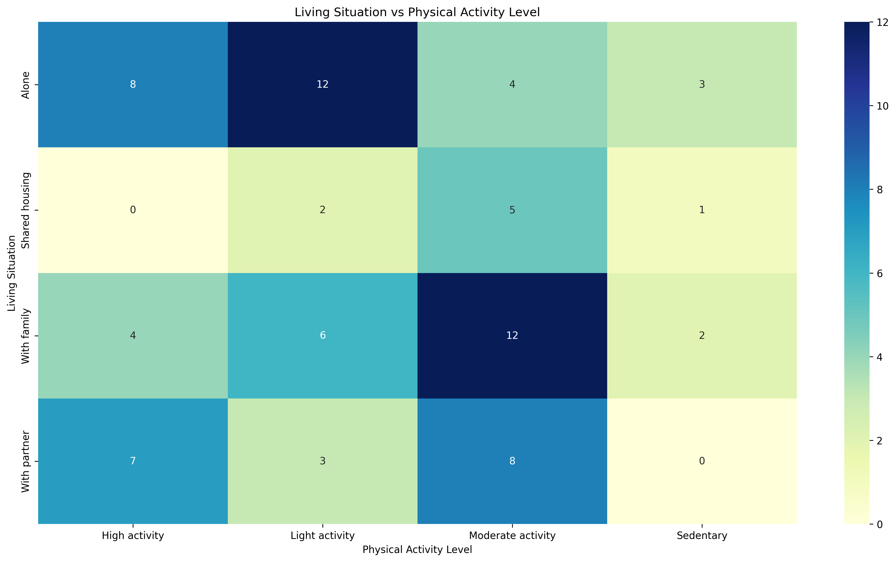
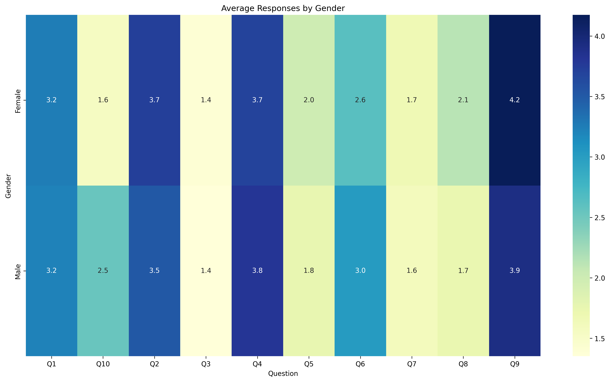
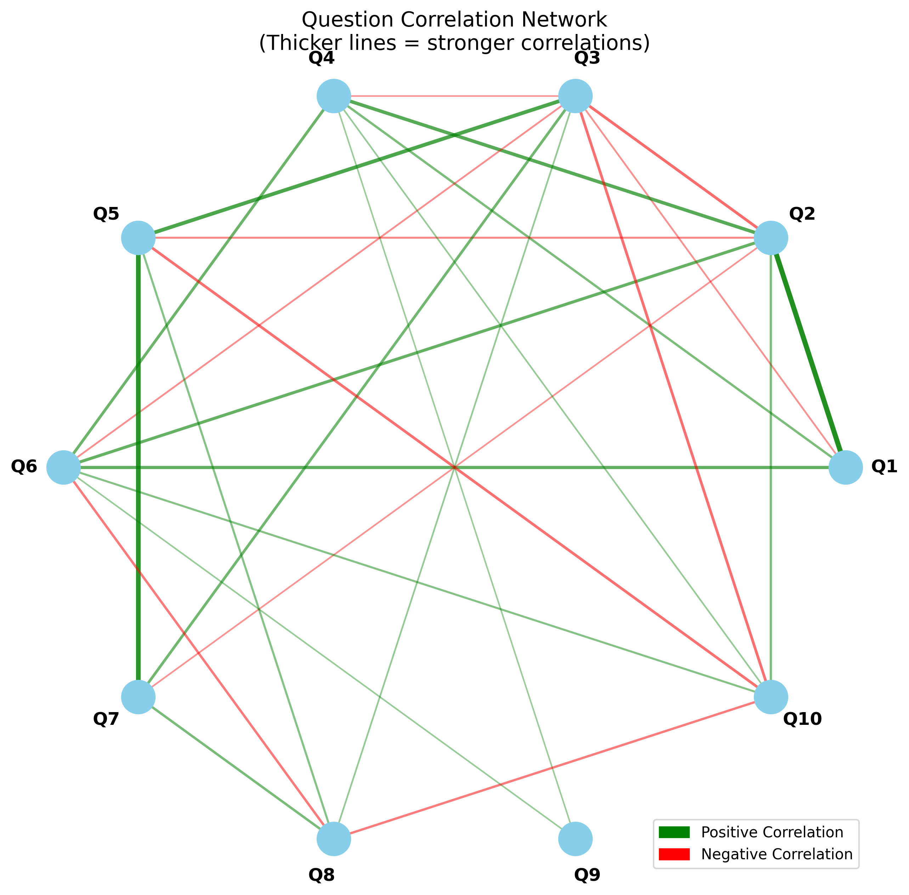
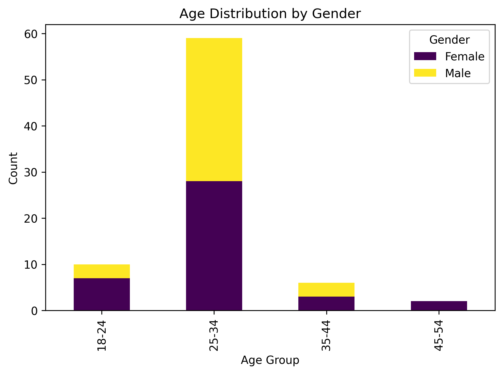
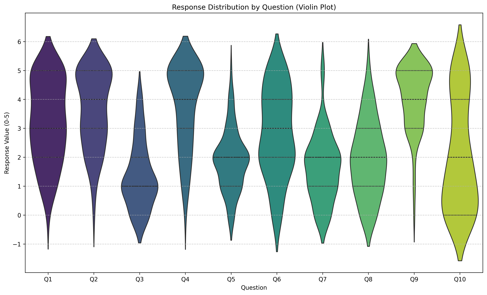
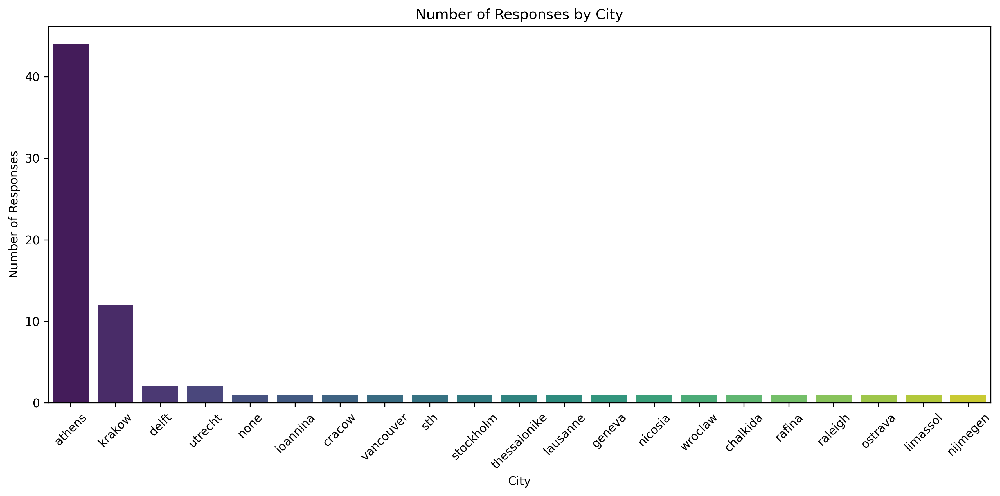
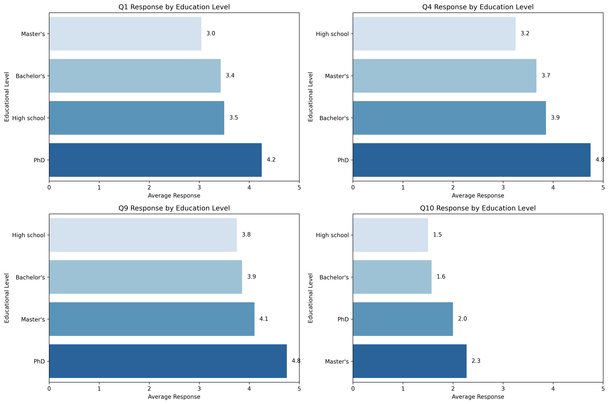

Descriptive (28)28 analyses ✅
Image 1: question_means.png
90.0% Confidence

bar chart Visualization
Key Findings:
- The highest average score is for Q9, 'How often do you consume dairy products?'
- Q4, 'How often do you eat three or more meals per day?' also scores high
- Q3, 'How often do you drink sugary beverages?' has the lowest average score
Image 2: question_distributions.png
90.0% Confidence
histograms Visualization
Key Findings:
- The consumption of fruits and vegetables shows a positive trend
- Responses on sugary beverages indicate a conscious effort to limit sugar intake
- High frequency of eating three or more meals per day is noted
Image 3: individual_responses.png
90.0% Confidence
heatmap Visualization
Key Findings:
- Respondents with lower sugary beverage consumption tended to consume more fruits and vegetables
- Fast food consumption was inversely related to whole grain consumption
- Frequent alcohol consumers had lower scores for nutritional supplement use
Image 4: activity_responses.png
90.0% Confidence
heatmap Visualization
Key Findings:
- Individuals with high activity levels consume sugary beverages the least
- Sedentary individuals are least likely to take nutritional supplements
- Dairy product consumption is high across all activity levels
Image 5: living_activity.png
90.0% Confidence

Heatmap Visualization
Key Findings:
- The highest frequency (12) occurs for those living alone with light activity and those living with family with moderate activity.
- The lowest frequency (0) is observed for those in shared housing with high activity and those living with a partner with sedentary activity.
- Individuals living alone tend to have higher activity levels compared to those in shared housing.
- Moderate activity is most common among those living with family.
- Sedentary lifestyle is least common among those living with a partner.
Image 6: city_responses.png
90.0% Confidence
heatmap Visualization
Key Findings:
- Delft and Utrecht show strong inclination towards consuming vegetables
- Delft and Utrecht report lowest scores for sugary beverages
- None exhibits a unique pattern with high score for consuming dairy products
Image 7: top_cities.png
90.0% Confidence
Bar Chart Visualization
Key Findings:
- Athens has the highest number of respondents, with 44 individuals.
- Krakow follows with 12 respondents.
- Delft and Utrecht each have 2 respondents.
- There is 1 respondent from a category labeled 'none.'
Image 8: zero_responses.png
90.0% Confidence
bar chart Visualization
Key Findings:
- Many people don't take vitamins or supplements at all. This could mean they either don't think they need them or aren't aware of their benefits.
- Quite a few people are choosing not to drink sugary drinks like soda. This might mean they're trying to be healthier by avoiding too much sugar.
- Some people are staying away from fried foods. They might be doing this because they know it's not the healthiest option.
Image 9: gender_analysis.png
90.0% Confidence

heatmap Visualization
Key Findings:
- Similar frequencies in consuming fruits and sugary beverages between genders
- Significant gender disparity in the consumption of nutritional supplements
- Females consume dairy products more frequently than males
Image 10: employment_status.png
90.0% Confidence
Pie chart Visualization
Key Findings:
- A significant majority of respondents are employed full-time.
- Students make up a smaller portion, followed by part-time workers and unemployed individuals.
Image 11: activity_comparison.png
90.0% Confidence
bar chart Visualization
Key Findings:
- Individuals with high activity levels score higher in consuming fruits and whole grains
- Consumption of sugary beverages is lower among active individuals
- Sedentary individuals exhibit higher scores in consuming dairy products
Image 12: employment_responses.png
90.0% Confidence
heatmap Visualization
Key Findings:
- Students prioritize vegetable consumption
- Part-time employees have regular meal patterns
- Part-time employees prefer healthier drink options
Image 13: education_analysis.png
90.0% Confidence
heatmap Visualization
Key Findings:
- Higher educational attainment is associated with healthier eating habits
- PhD holders consume fruits more frequently than those with a Master's degree
- PhD holders eat three or more meals a day more regularly
- PhD holders consume deep-fried food less often
Image 14: key_findings_summary.png
90.0% Confidence
bar chart Visualization
Key Findings:
- Dairy products are frequently consumed by participants
- Reduced consumption of sugary beverages due to health awareness
Image 15: completion_time.png
90.0% Confidence
histogram Visualization
Key Findings:
- Central Tendency: The mean completion time is 2.42 minutes, slightly higher than the median of 2.18 minutes.
- Distribution Shape: The histogram shows a peak around the 2-minute mark, indicating that most respondents completed the survey in this time frame.
- Spread and Outliers: The presence of completion times extending up to 7 minutes indicates variability and potential outliers.
Image 16: question_boxplots.png
90.0% Confidence
box plot Visualization
Key Findings:
- Participants consume fruits and vegetables regularly
- Reduced sugary beverage intake
- Moderate alcohol consumption
Image 17: age_distribution.png
90.0% Confidence
Bar Chart Visualization
Key Findings:
- The age group 25-34 has the highest number of respondents at 59.
- The age group 18-24 has 10 respondents.
- The age group 35-44 has 6 respondents.
- The age group 45-54 has 2 respondents.
- There is a significant concentration of respondents in the 25-34 age group, suggesting this age group is the most engaged or targeted in the survey.
Image 18: correlation_network.png
90.0% Confidence

correlation network diagram Visualization
Key Findings:
- There is a strong positive correlation between the consumption of whole grains and the frequency of eating fast food or takeout.
- A notable negative correlation exists between the consumption of sugary beverages and the frequency of eating vegetables.
- There is a significant negative correlation between alcohol consumption and the intake of dairy products.
Image 19: gender_radar.png
90.0% Confidence

radar chart Visualization
Key Findings:
- females have healthier dietary habits compared to males
- females show higher consumption of fruits, vegetables, and whole grains
- males show higher consumption of sugary beverages
Image 20: age_response_heatmap.png
90.0% Confidence
heatmap Visualization
Key Findings:
- Older adults (45-54) have the highest average response for regular meal consumption
- Middle-aged adults (35-44) show the lowest interest in sugary beverages
- Individuals aged 35-44 have the highest frequency of alcohol consumption
Image 21: question_correlations.png
90.0% Confidence
correlation matrix Visualization
Key Findings:
- The consumption of fruits and vegetables shows a strong positive correlation (r=0.67).
- The relationship between fast food consumption and deep-fried food intake is notably strong (r=0.63).
- Sugary beverage consumption and whole grain intake are negatively correlated (r=-0.36).
Image 22: age_gender_distribution.png
90.0% Confidence

bar chart Visualization
Key Findings:
- Dominance of the 25-34 Age Group
- Gender Distribution
- Smaller Representation in Other Age Groups
Image 23: response_violins.png
90.0% Confidence

violin plot Visualization
Key Findings:
- Many individuals consume fruits and vegetables frequently
- Sugary beverages and fast food are consumed less frequently
- There is a growing trend towards whole grains and nutritional supplements
Image 24: gender_comparison.png
90.0% Confidence

bar chart Visualization
Key Findings:
- Both males and females scored highest on Q9, indicating a preference for dairy products
- Low scores for Q3 suggest a tendency to avoid sugary beverages
- Higher average score for Q4, especially among males, indicates regular meal consumption
Image 25: education_distribution.png
90.0% Confidence
Bar chart Visualization
Key Findings:
- The majority of respondents have a Master's degree, indicating a higher level of educational attainment among the group.
- Bachelor's degree holders form the second-largest group.
- High School and PhD holders are equally represented, but in much smaller numbers compared to the other categories.
Image 26: city_distribution.png
90.0% Confidence

Bar chart Visualization
Key Findings:
- Athens has the highest number of responses, with over 40.
- Krakow follows with a significantly lower count, around 10 responses.
- Other cities have minimal responses, mostly below 5.
Image 27: response_frequency.png
90.0% Confidence
heatmap Visualization
Key Findings:
- Consuming vegetables (Q2) shows a high frequency at level 5, indicating a strong inclination towards a balanced diet.
- Sugary beverages (Q3) have a notably low frequency at the highest response level, suggesting a positive trend towards reducing sugar intake.
- Many individuals frequently consume three or more meals per day (Q4), supporting metabolic health and energy levels.
Image 28: education_response.png
90.0% Confidence

bar chart Visualization
Key Findings:
- Higher education levels correlated with more frequent fruit consumption
- PhD holders reported significantly higher meal frequency
- Master's degree holders showed a greater tendency to use nutritional supplements